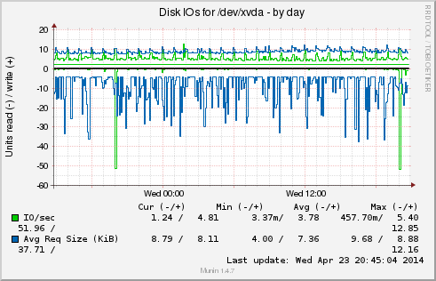
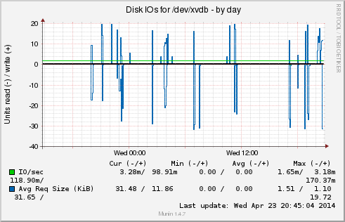
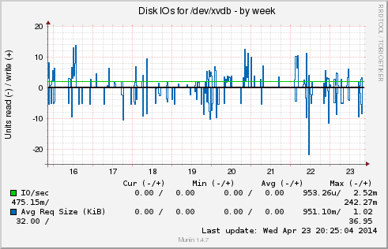

disk | |
|  |  |
|  |  |
Overview :: org :: nova-labs.org :: diskstats_iops |
|
diskstats_iops :: [ disk ] |
| ||||||||
| Overview :: org :: nova-labs.org :: | ||||||||
| This page was generated by Munin version 1.4.7 at 2014-04-23 20:45:15-0400 (EDT) |